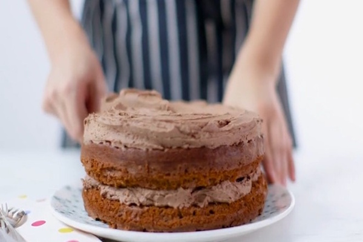

Easy chocolate cake
Miriam Nice

Ingredients:
- 200g golden caster sugar
- 200g unsalted butter softened
- 4 large eggs
- 200g self-raising flour
- 2 tbsp cocoa powder
- 1 tsp baking powder
- ½ tsp vanilla extract
- 2 tbsp milk
- 100g milk chocolate
chopped
- 200g butter
softened
- 400g icing sugar
- 5 tbsp cocoa powder
- 2 tbsp milk
Step 1:
Heat oven to 190C/170C fan/gas 5. Butter the base and sides of two 20cm round sandwich tins and line the bases with baking parchment.
Step 2:
In a large bowl, beat together 200g golden caster sugar, 200g softened unsalted butter,
4 large eggs, 200g self-raising flour, 2 tbsp cocoa powder, 1 tsp baking powder,
½ tsp vanilla extract, 2 tbsp milk and a pinch of salt until pale.
Step 3:
Divide the mixture between the prepared tins. Bake for 20 mins or until a skewer inserted into the centre of the cake comes out clean.
Step 4:
Leave to cool in the tin for 10 mins, then turn out onto a wire rack to cool completely.
Step 5:
For the buttercream, put 100g chopped milk chocolate in a heatproof bowl and melt in the microwave, stirring every 30 secs.
Leave the melted chocolate to cool for 5 mins.
Step 6:
Mash 200g softened butter and 400g icing sugar together with a fork, then switch to a wooden spoon or electric beaters, if you have them.
Step 7
ift in 5 tbsp cocoa powder with a pinch of salt and pour in the melted chocolate and 2 tbsp milk. Mix again until smooth.
Step 8
On a cake stand or large plate, sandwich the cakes together with half of the buttercream, then spread the rest on top.